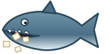
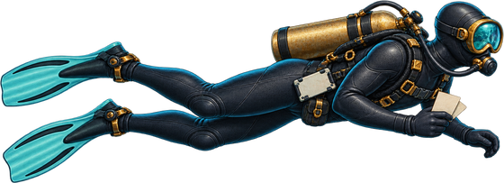

Steve's Fact Dive Tester demo
Tester demo. This is just an example of what we have so far, and it may change.
Scuba Steve is a marine biologist who collects facts. Each bubble holds a fact. Pop the made-up ones by firing a suction-cup tracker. Catch the true ones by swimming Steve into them. A true fact always names its source.


How to play
- Made-up bubble (silly, with a shaky source like "trust me"): shoot it to pop it.
- True bubble (names a real place like NOAA): swim Steve into it to catch it. Do not shoot it.
- If a made-up bubble reaches Steve, a paper is lost. Three papers, 60 seconds.
On a phone: drag your finger up or down to move Steve, and lift to fire. A tap moves and fires. The Fire button works too. On a keyboard: Up and Down arrows, space fires.
Nice diving!
Ready when you are.
This game runs only in your browser. It sends nothing anywhere and saves nothing about you. Close the page and it is gone. The shark is a cartoon. It never goes near Steve, and the suction-cup trackers are harmless. The made-up facts are silly on purpose. The true facts come from the sources named in each one.